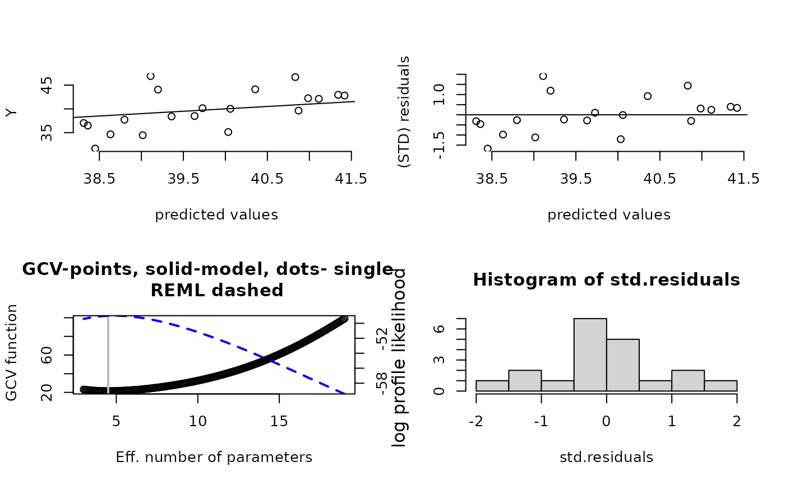
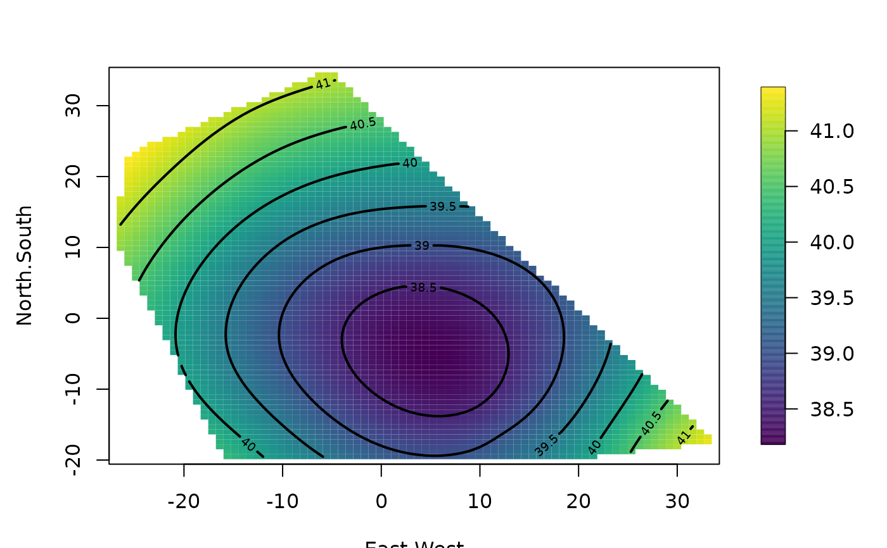
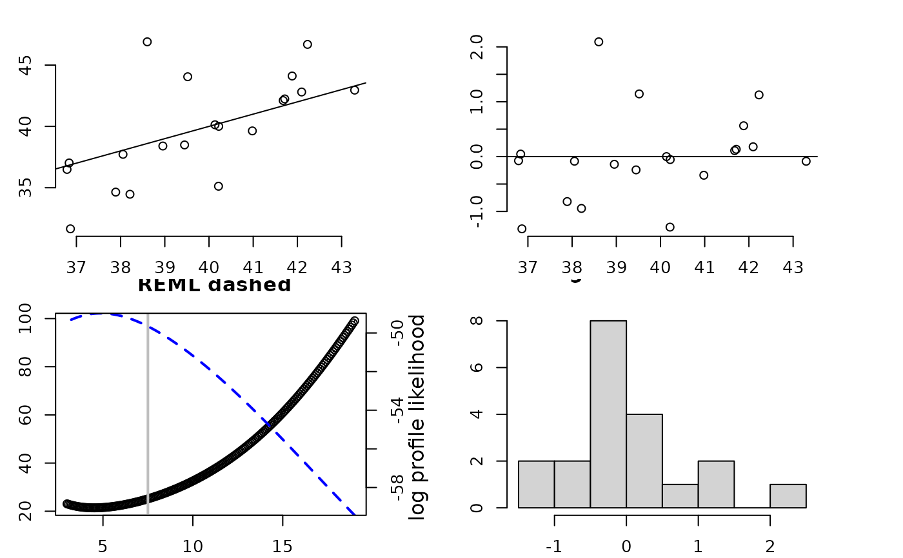
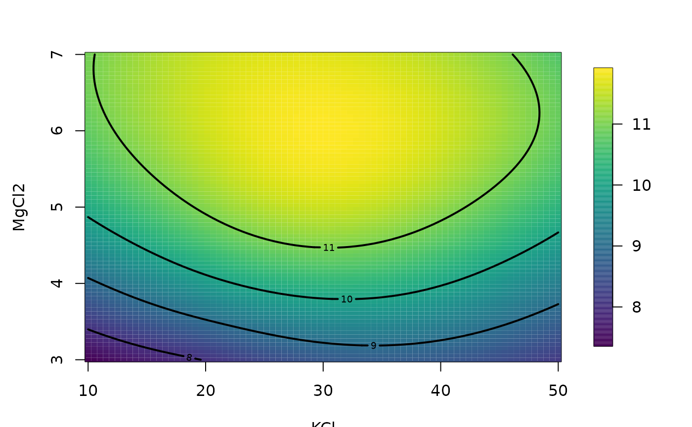

Tps.RdFits a thin plate spline surface to irregularly spaced data. The smoothing parameter is chosen by generalized cross-validation. The assumed model is additive Y = f(X) +e where f(X) is a d dimensional surface. This is the classic nonparametric curve/surface estimate pioneered in statistics by Grace Wahba. This function also works for just a single dimension and is a special case of a Gaussian process estimate as the range parameter in the Matern family increases to infinity. (Kriging).
A "fast" version of this function uses a compactly supported Wendland covariance and sparse linear algebra for handling larger datta sets. Although a good approximation to Tps for sufficiently large aRange its actual form is very different from the textbook thin-plate definition.
Tps(x, Y, m = NULL, p = NULL, scale.type = "range", lon.lat = FALSE,
miles = TRUE, method = "GCV", GCV = TRUE, ...)
fastTps(x, Y, m = NULL, p = NULL, aRange, lon.lat = FALSE,
find.trA = FALSE, REML = FALSE,theta=NULL, ...)Matrix of independent variables. Each row is a location or a set of independent covariates.
Vector of dependent variables.
A polynomial function of degree (m-1) will be included in the model as the drift (or spatial trend) component. Default is the value such that 2m-d is greater than zero where d is the dimension of x.
Polynomial power for Wendland radial basis functions. Default is 2m-d where d is the dimension of x.
The independent variables and knots are scaled to the specified scale.type. By default the scale type is "range", whereby the locations are transformed to the interval (0,1) by forming (x-min(x))/range(x) for each x. Scale type of "user" allows specification of an x.center and x.scale by the user. The default for "user" is mean 0 and standard deviation 1. Scale type of "unscaled" does not scale the data.
The tapering range that is passed to the Wendland compactly supported covariance. The covariance (i.e. the radial basis function) is zero beyond range aRange. The larger aRange the closer this model will approximate the standard thin plate spline.
If TRUE locations are interpreted as lognitude and
latitude and great circle distance is used to find distances among
locations. The aRange scale parameter for fast.Tps (setting the
compact support of the Wendland function) in this case is in units of
miles (see example and caution below).
Determines what "smoothing" parameter should be used. The default is to estimate standard GCV Other choices are: GCV.model, GCV.one, RMSE, pure error and REML. The differences are explained in the Krig help file.
If TRUE the decompositions are done to efficiently evaluate the estimate, GCV function and likelihood at multiple values of lambda.
If TRUE great circle distances are in miles if FALSE distances are in kilometers
If TRUE will estimate the effective degrees of freedom
using a simple Monte Carlo method (random trace). This will add to the
computational burden by approximately NtrA solutions of the
linear system but
the cholesky decomposition is reused.
If TRUE find the MLE for lambda using restricted maximum likelihood instead of the full version.
Same as aRange.
For Tps any argument that is valid for the
Krig function. Some of the main ones are listed below.
For fastTps any argument that is suitable for the mKrig
function see help on mKrig for these choices. The most common would be
lambda fixing the value of this parameter (tau^2/sigma^2), Z linear covariates or
mKrig.args= list( m=1) setting the regression model to be just a constant function.
Arguments for Tps:
Smoothing parameter that is the ratio of the error variance (tau**2) to the scale parameter of the covariance function. If omitted this is estimated by GCV.
Linear covariates to be included in fixed part of the model
that are distinct from the default low order polynomial in
x
The effective number of parameters for the fitted surface. Conversely, N- df, where N is the total number of observations is the degrees of freedom associated with the residuals. This is an alternative to specifying lambda and much more interpretable.
Cost value used in GCV criterion. Corresponds to a penalty for increased number of parameters. The default is 1.0 and corresponds to the usual GCV.
Weights are proportional to the reciprocal variance of the measurement error. The default is no weighting i.e. vector of unit weights.
Number of grid points for minimum GCV search.
Centering values are subtracted from each column of the x matrix. Must have scale.type="user".
Scale values that divided into each column after centering. Must have scale.type="user".
Scale factor for covariance.
Variance of errors or if weights are not equal to 1 the variance is tau**2/weight.
If true will print out all kinds of intermediate stuff.
Object to predict the mean of the spatial process.
Object to predict the marginal standard deviation of the spatial process.
An R function that creates the matrices for the null space model. The default is fields.mkpoly, an R function that creates a polynomial regression matrix with all terms up to degree m-1. (See Details)
The offset to be used in the GCV criterion. Default is 0. This would be used when Krig/Tps is part of a backfitting algorithm and the offset has to be included to reflect other model degrees of freedom.
A list of class Krig. This includes the fitted values, the predicted surface evaluated at the observation locations, and the residuals. The results of the grid search minimizing the generalized cross validation function are returned in gcv.grid. Note that the GCV/REML optimization is done even if lambda or df is given. Please see the documentation on Krig for details of the returned arguments.
Both of these functions are special cases of using the
Krig and mKrig functions. See the help on each of these
for more information on the calling arguments and what is returned.
Tps makes use of the stable computations via eigen decompositions in Krig. fastTps follows the more standard computations for spatial statistics centered around the Cholesky decomposition in mKrig.
A thin plate spline is the result of minimizing the residual sum of squares subject to a constraint that the function have a certain level of smoothness (or roughness penalty). Roughness is quantified by the integral of squared m-th order derivatives. For one dimension and m=2 the roughness penalty is the integrated square of the second derivative of the function. For two dimensions the roughness penalty is the integral of
(Dxx(f))**22 + 2(Dxy(f))**2 + (Dyy(f))**22
(where Duv denotes the second partial derivative with respect to u and v.) Besides controlling the order of the derivatives, the value of m also determines the base polynomial that is fit to the data. The degree of this polynomial is (m-1).
The smoothing parameter controls the amount that the data is smoothed. In the usual form this is denoted by lambda, the Lagrange multiplier of the minimization problem. Although this is an awkward scale, lambda = 0 corresponds to no smoothness constraints and the data is interpolated. lambda=infinity corresponds to just fitting the polynomial base model by ordinary least squares.
This estimator is implemented by passing the right generalized covariance function based on radial basis functions to the more general function Krig. One advantage of this implementation is that once a Tps/Krig object is created the estimator can be found rapidly for other data and smoothing parameters provided the locations remain unchanged. This makes simulation within R efficient (see example below). Tps does not currently support the knots argument where one can use a reduced set of basis functions. This is mainly to simplify the code and a good alternative using knots would be to use a valid covariance from the Matern family and a large range parameter.
CAUTION about lon.lat=TRUE: The option to use great circle distance
to define the radial basis functions (lon.lat=TRUE) is very useful
for small geographic domains where the spherical geometry is well approximated by a plane. However, for large domains the spherical distortion be large enough that the basis function no longer define a positive definite system and Tps will report a numerical error. An alternative is to switch to a three
dimensional thin plate spline the locations being the direction cosines. This will
give approximate great circle distances for locations that are close and also the numerical methods will always have a positive definite matrices.
Here is an example using this idea for RMprecip and also some
examples of building grids and evaluating the Tps results on them:
# a useful function:
dircos<- function(x1){
coslat1 <- cos((x1[, 2] * pi)/180)
sinlat1 <- sin((x1[, 2] * pi)/180)
coslon1 <- cos((x1[, 1] * pi)/180)
sinlon1 <- sin((x1[, 1] * pi)/180)
cbind(coslon1*coslat1, sinlon1*coslat1, sinlat1)}
# fit in 3-d to direction cosines
out<- Tps(dircos(RMprecip$x),RMprecip$y)
xg<-make.surface.grid(fields.x.to.grid(RMprecip$x))
fhat<- predict( out, dircos(xg))
# coerce to image format from prediction vector and grid points.
out.p<- as.surface( xg, fhat)
surface( out.p)
# compare to the automatic
out0<- Tps(RMprecip$x,RMprecip$y, lon.lat=TRUE)
surface(out0)The function fastTps is really a convenient wrapper function that
calls spatialProcess with a suitable Wendland covariance
function. This means one can use all the additional functions for
prediction and simulation built for the spatialProcess and
mKrig objects.
This is function is
experimental, however, and some care needs to exercised in specifying
the support aRange
and power ( p) which describes the polynomial behavior of
the Wendland at the origin. Note that unlike Tps the locations are not
scaled to unit range and this can cause havoc in smoothing problems with
variables in very different units.
So rescaling the locations x<- scale(x)
is a good idea for putting the variables on a common scale
for smoothing. A conservative rule of thumb is to make aRange
large enough so that about 50 nearest neighbors are within this distance
for every observation location.
This function does have the potential to approximate estimates of Tps
for very large spatial data sets. See wendland.cov and help on
the SPAM package for more background.
Also, the function predictSurface.fastTps has been made more
efficient for the
case of k=2 and m=2.
See also the mKrig function for handling larger data sets and also for an example of combining Tps and mKrig for evaluation on a huge grid.
See "Nonparametric Regression and Generalized Linear Models" by Green and Silverman. See "Additive Models" by Hastie and Tibshirani.
#2-d example
fit<- Tps(ChicagoO3$x, ChicagoO3$y) # fits a surface to ozone measurements.
set.panel(2,2)
#> plot window will lay out plots in a 2 by 2 matrix
plot(fit) # four diagnostic plots of fit and residuals.

set.panel()
#> plot window will lay out plots in a 1 by 1 matrix
# summary of fit and estiamtes of lambda the smoothing parameter
summary(fit)
#> CALL:
#> Tps(x = ChicagoO3$x, Y = ChicagoO3$y)
#>
#> Number of Observations: 20
#> Number of unique points: 20
#> Number of parameters in the null space 3
#> Parameters for fixed spatial drift 3
#> Effective degrees of freedom: 4.5
#> Residual degrees of freedom: 15.5
#> MLE tau 3.779
#> GCV tau 4.073
#> MLE sigma 347.7
#> Scale passed for covariance (sigma) <NA>
#> Scale passed for nugget (tau^2) <NA>
#> Smoothing parameter lambda 0.04107
#>
#> Residual Summary:
#> min 1st Q median 3rd Q max
#> -6.8060 -1.4390 -0.5064 1.4440 7.7890
#>
#> Covariance Model: Rad.cov
#> Names of non-default covariance arguments:
#> p
#>
#> DETAILS ON SMOOTHING PARAMETER:
#> Method used: GCV Cost: 1
#> lambda trA GCV GCV.one GCV.model tauHat
#> 0.04107 4.50304 21.40938 21.40938 NA 4.07296
#>
#> Summary of all estimates found for lambda
#> lambda trA GCV tauHat -lnLike Prof converge
#> GCV 0.04107 4.503 21.41 4.073 49.00 5
#> GCV.model NA NA NA NA NA NA
#> GCV.one 0.04107 4.503 21.41 4.073 NA 5
#> RMSE NA NA NA NA NA NA
#> pure error NA NA NA NA NA NA
#> REML 0.02972 4.886 21.49 4.030 48.98 4
surface( fit) # Quick image/contour plot of GCV surface.

# NOTE: the predict function is quite flexible:
look<- predict( fit, lambda=2.0)
# evaluates the estimate at lambda =2.0 _not_ the GCV estimate
# it does so very efficiently from the Krig fit object.
look<- predict( fit, df=7.5)
# evaluates the estimate at the lambda values such that
# the effective degrees of freedom is 7.5
# compare this to fitting a thin plate spline with
# lambda chosen so that there are 7.5 effective
# degrees of freedom in estimate
# Note that the GCV function is still computed and minimized
# but the lambda values used correpsonds to 7.5 df.
fit1<- Tps(ChicagoO3$x, ChicagoO3$y,df=7.5)
set.panel(2,2)
#> plot window will lay out plots in a 2 by 2 matrix
plot(fit1) # four diagnostic plots of fit and residuals.

# GCV function (lower left) has vertical line at 7.5 df.
set.panel()
#> plot window will lay out plots in a 1 by 1 matrix
# The basic matrix decompositions are the same for
# both fit and fit1 objects.
# predict( fit1) is the same as predict( fit, df=7.5)
# predict( fit1, lambda= fit$lambda) is the same as predict(fit)
# predict onto a grid that matches the ranges of the data.
out.p<-predictSurface( fit)
image( out.p)
# the surface function (e.g. surface( fit)) essentially combines
# the two steps above
# predict at different effective
# number of parameters
out.p<-predictSurface( fit,df=10)
if (FALSE) {
# predicting on a grid along with a covariate
data( COmonthlyMet)
# predicting average daily minimum temps for spring in Colorado
# NOTE to create an 4km elevation grid:
# data(PRISMelevation); CO.elev1 <- crop.image(PRISMelevation, CO.loc )
# then use same grid for the predictions: CO.Grid1<- CO.elev1[c("x","y")]
obj<- Tps( CO.loc, CO.tmin.MAM.climate, Z= CO.elev)
out.p<-predictSurface( obj,
CO.Grid, ZGrid= CO.elevGrid)
imagePlot( out.p)
US(add=TRUE, col="grey")
contour( CO.elevGrid, add=TRUE, levels=c(2000), col="black")
}
if (FALSE) {
#A 1-d example with confidence intervals
out<-Tps( rat.diet$t, rat.diet$trt) # lambda found by GCV
out
plot( out$x, out$y)
xgrid<- seq( min( out$x), max( out$x),,100)
fhat<- predict( out,xgrid)
lines( xgrid, fhat,)
SE<- predictSE( out, xgrid)
lines( xgrid,fhat + 1.96* SE, col="red", lty=2)
lines(xgrid, fhat - 1.96*SE, col="red", lty=2)
#
# compare to the ( much faster) B spline algorithm
# sreg(rat.diet$t, rat.diet$trt)
# Here is a 1-d example with 95 percent CIs where sreg would not
# work:
# sreg would give the right estimate here but not the right CI's
x<- seq( 0,1,,8)
y<- sin(3*x)
out<-Tps( x, y) # lambda found by GCV
plot( out$x, out$y)
xgrid<- seq( min( out$x), max( out$x),,100)
fhat<- predict( out,xgrid)
lines( xgrid, fhat, lwd=2)
SE<- predictSE( out, xgrid)
lines( xgrid,fhat + 1.96* SE, col="red", lty=2)
lines(xgrid, fhat - 1.96*SE, col="red", lty=2)
}
# More involved example adding a covariate to the fixed part of model
if (FALSE) {
set.panel( 1,3)
# without elevation covariate
out0<-Tps( RMprecip$x,RMprecip$y)
surface( out0)
US( add=TRUE, col="grey")
# with elevation covariate
out<- Tps( RMprecip$x,RMprecip$y, Z=RMprecip$elev)
# NOTE: out$d[4] is the estimated elevation coefficient
# it is easy to get the smooth surface separate from the elevation.
out.p<-predictSurface( out, drop.Z=TRUE)
surface( out.p)
US( add=TRUE, col="grey")
# and if the estimate is of high resolution and you get by with
# a simple discretizing -- does not work in this case!
quilt.plot( out$x, out$fitted.values)
#
# the exact way to do this is evaluate the estimate
# on a grid where you also have elevations
# An elevation DEM from the PRISM climate data product (4km resolution)
data(RMelevation)
grid.list<- list( x=RMelevation$x, y= RMelevation$y)
fit.full<- predictSurface( out, grid.list, ZGrid= RMelevation)
# this is the linear fixed part of the second spatial model:
# lon,lat and elevation
fit.fixed<- predictSurface( out, grid.list, just.fixed=TRUE,
ZGrid= RMelevation)
# This is the smooth part but also with the linear lon lat terms.
fit.smooth<-predictSurface( out, grid.list, drop.Z=TRUE)
#
set.panel( 3,1)
fit0<- predictSurface( out0, grid.list)
image.plot( fit0)
title(" first spatial model (w/o elevation)")
image.plot( fit.fixed)
title(" fixed part of second model (lon,lat,elev linear model)")
US( add=TRUE)
image.plot( fit.full)
title("full prediction second model")
set.panel()
}
###
### fast Tps
# m=2 p= 2m-d= 2
#
# Note: aRange = 3 degrees is a very generous taper range.
# Use some trial aRange value with rdist.nearest to determine a
# a useful taper. Some empirical studies suggest that in the
# interpolation case in 2 d the taper should be large enough to
# about 20 non zero nearest neighbors for every location.
out2<- fastTps( RMprecip$x,RMprecip$y,m=2, aRange=3.0,
profileLambda=FALSE)
# note that fastTps produces a object of classes spatialProcess and mKrig
# so one can use all the
# the overloaded functions that are defined for these classes.
# predict, predictSE, plot, sim.spatialProcess
# summary of what happened note estimate of effective degrees of
# freedom
# profiling on lambda has been turned off to make this run quickly
# but it is suggested that one examines the the profile likelihood over lambda
print( out2)
#> CALL:
#> fastTps(x = RMprecip$x, Y = RMprecip$y, m = 2, aRange = 3, profileLambda = FALSE)
#>
#> SUMMARY OF MODEL FIT:
#>
#> Number of Observations: 806
#> Degree of polynomial in fixed part: 1
#> Total number of parameters in fixed part: 3
#> sigma Process stan. dev: 22.53
#> tau Nugget stan. dev: 25.99
#> lambda tau^2/sigma^2: 1.33
#> aRange parameter (in units of distance): 3
#> Approx. degrees of freedom for curve 105.9
#> Standard Error of df estimate: 2.338
#> log Likelihood: -3871.12060412435
#> log Likelihood REML: -3879.17851011222
#>
#> ESTIMATED COEFFICIENTS FOR FIXED PART:
#>
#> estimate SE pValue
#> d1 756.400 106.5000 1.202e-12
#> d2 4.425 0.9369 2.317e-06
#> d3 -5.471 1.1070 7.698e-07
#>
#> COVARIANCE MODEL: wendland.cov
#> Non-default covariance arguments and their values
#> k :
#> [1] 2
#> Dist.args :
#> $method
#> [1] "euclidean"
#>
#> aRange :
#> [1] 3
#> Nonzero entries in covariance matrix 119816
#>
#> SUMMARY FROM Max. Likelihood ESTIMATION:
#> Parameters found from optim:
#> lambda
#> 1.330438
#> Approx. confidence intervals for MLE(s)
#> lower95% upper95%
#> lambda 0.9586872 1.846342
#>
#> Note: MLEs for tau and sigma found analytically from lambda
#>
#> Summary from estimation:
#> lnProfileLike.FULL lnProfileREML.FULL lnLike.FULL lnREML.FULL
#> -3871.120604 -3879.178510 NA NA
#> lambda tau sigma2 aRange
#> 1.330438 25.991494 507.771046 3.000000
#> eff.df GCV
#> 105.905726 774.682072
if (FALSE) {
set.panel( 1,2)
surface( out2)
#
# now use great circle distance for this smooth
# Here "aRange" for the taper support is the great circle distance in degrees latitude.
# Typically for data analysis it more convenient to think in degrees. A degree of
# latitude is about 68 miles (111 km).
#
fastTps( RMprecip$x,RMprecip$y,m=2, lon.lat=TRUE, aRange= 210 ) -> out3
print( out3) # note the effective degrees of freedom is different.
surface(out3)
set.panel()
}
if (FALSE) {
#
# simulation reusing Tps/Krig object
#
fit<- Tps( rat.diet$t, rat.diet$trt)
true<- fit$fitted.values
N<- length( fit$y)
temp<- matrix( NA, ncol=50, nrow=N)
tau<- fit$tauHat.GCV
for ( k in 1:50){
ysim<- true + tau* rnorm(N)
temp[,k]<- predict(fit, y= ysim)
}
matplot( fit$x, temp, type="l")
}
#
#4-d example
fit<- Tps(BD[,1:4],BD$lnya,scale.type="range")
# plots fitted surface and contours
# default is to hold 3rd and 4th fixed at median values
surface(fit)
